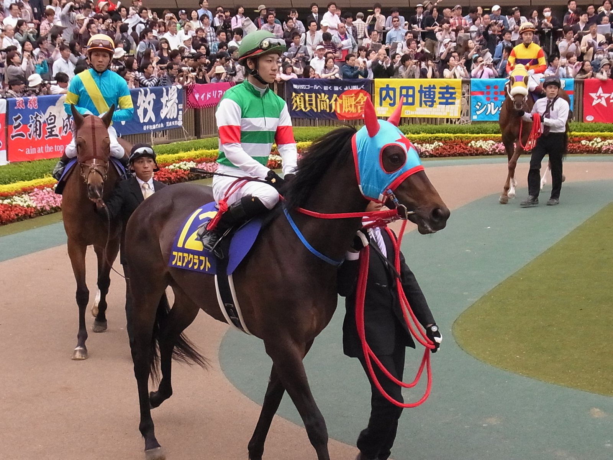

Curlin volverá a cubrir en 2027 en Hill 'n' Dale tras dejar preñadas a dos yeguas de prueba
Curlin estará en la lista de sementales de Hill 'n' Dale at Xalapa, en Paris (Kentucky), para la temporada de 2027. La yeguada ha confirmado su vuelta a la monta después de que dos yeguas cubiertas a modo de prueba este otoño hayan quedado preñadas.

"Nos da un gran optimismo de que volverá a cubrir", explicó John Sikura, responsable de Hill 'n' Dale. "Estamos gestionando a Curlin con muchísimo cuidado, con el respeto que merece como uno de los sementales más influyentes".
El caballo, nacido en 2004 y dos veces Caballo del Año en Estados Unidos, se ofrecerá a precio privado. En 2026 su tarifa era de 225.000 dólares. El número de yeguas que cubrirá se decidirá antes de la temporada, en función de nuevas pruebas.
Su huella como padre está a la vista. Entre sus hijos figura el campeón Good Magic, ya semental, cuya tarifa para 2027 es de 80.000 dólares, y sus descendientes han ganado varias carreras de la Breeders' Cup.
Por Martín Larrañeta